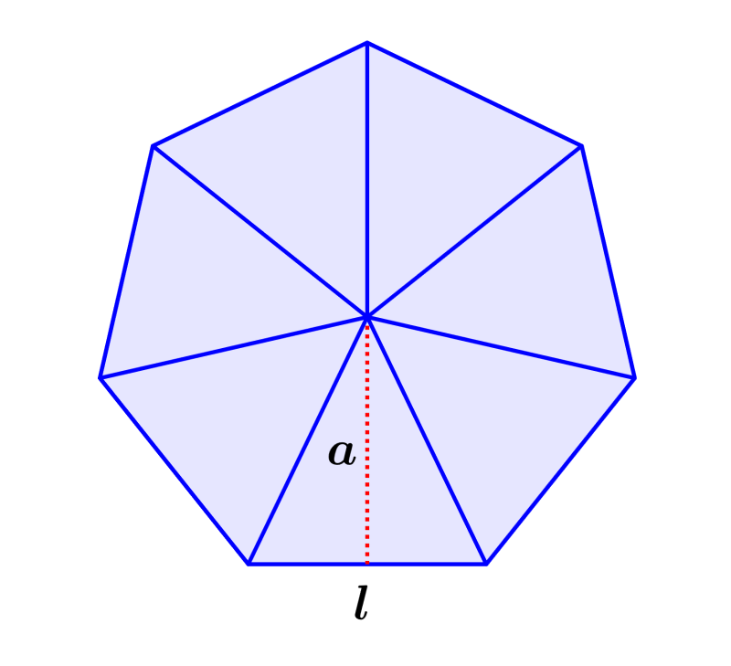

Heptágono
A forma geométrica 2D conhecida como heptágono regular é um polígono de sete lados onde todos os lados e todos os ângulos têm medidas iguais.
Heptágono = 7 lados
Calcular área
Para calcular a área de um heptágono, é necessário conhecer o apótema, que é a distância do centro do heptágono até o meio de qualquer um dos lados, e o valor de um dos lados. Pode-se utilizar a seguinte fórmula:
Área do heptágono = 7 x (b x a) / 2
Em que b representa o comprimento de um dos lados, e a representa o apótema.
Multiplicando-se o valor do apótema e do comprimento de um dos lados do heptágono e dividindo por 2, obtem-se a área de um dos 7 triângulos equiláteros que formam o heptágono.
Como o heptágono é formado por 7 triângulos, basta multiplicar a área deles por esse valor.
Por exemplo, se o comprimento de um dos lados é igual a 6 metros e o apótema é igual a 4 metros, a área do heptágono é:
Área do heptágono = 7 x (6 x 4) / 2
Área do heptágono = 168 / 2
Área do heptágono = 84 metros
Resultado:
Voltar